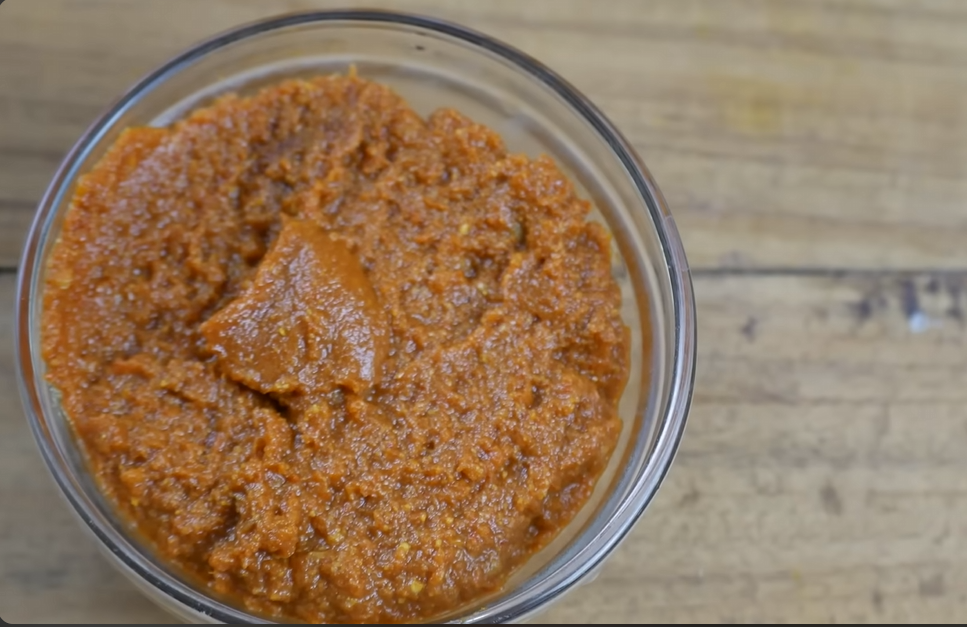

Source: YouTube Curry paste by Happy Bellyfish

A base indian curry paste to mix with meats or as a spread.
- 1 tbsp ghee
- 100g red onion, pureed
- 1 tsp garlic & ginger paste
- ½ tsp turmeric powder
- ½ tbsp cumin powder
- 1 tbsp coriander powder
- 1 tsp Kashmiri red chilli powder
- Water, as needed
- 200g tomatoes, pureed